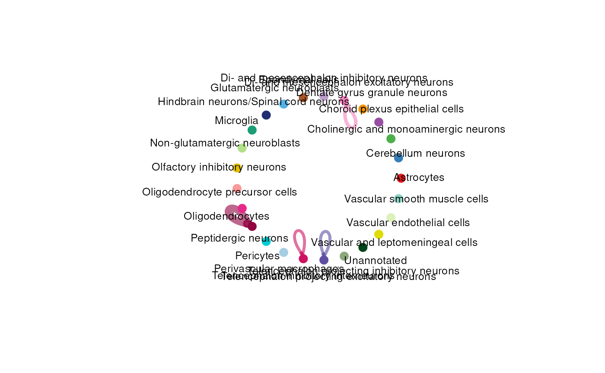
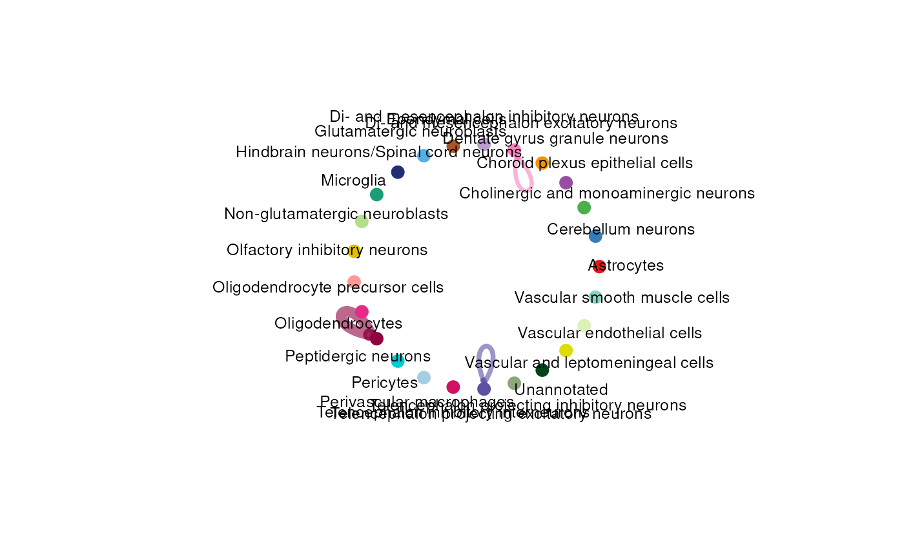

Produces CellChat circle plots for one or more pathways across normalization methods.
Examples
if (requireNamespace("CellChat", quietly = TRUE)) {
data(norm_ccc_example)
data("CellChatDB.mouse", package = "CellChat")
ccc_results <- run_ccc(
spelist = norm_ccc_example,
celltype_col = "cell_type",
database = CellChat::CellChatDB.mouse,
spatial_factors = data.frame(
ratio = 0.5,
tol = 12.5
),
interaction_range = 250,
contact_range = 25,
nboot = 10,
min_cells = 5,
verbose = FALSE
)
detected_pathways <- unique(unlist(
lapply(ccc_results, function(x) {
x$cellchat@netP$pathways
})
))
if (length(detected_pathways) > 0L) {
pathway <- detected_pathways[1]
for (method in names(ccc_results)) {
cellchat <- ccc_results[[method]]$cellchat
if (!is.null(cellchat) &&
pathway %in% cellchat@netP$pathways) {
CellChat::netVisual_aggregate(
cellchat,
signaling = pathway,
layout = "circle"
)
}
}
}
}
#> Registered S3 method overwritten by 'ggnetwork':
#> method from
#> fortify.igraph ggtree
#> [1] "Create a CellChat object from a data matrix"
#> Create a CellChat object from spatial transcriptomics data...
#> Set cell identities for the new CellChat object
#> The cell groups used for CellChat analysis are Astrocytes, Cerebellum neurons, Cholinergic and monoaminergic neurons, Choroid plexus epithelial cells, Dentate gyrus granule neurons, Di- and mesencephalon excitatory neurons, Di- and mesencephalon inhibitory neurons, Ependymal cells, Glutamatergic neuroblasts, Hindbrain neurons/Spinal cord neurons, Microglia, Non-glutamatergic neuroblasts, Olfactory inhibitory neurons, Oligodendrocyte precursor cells, Oligodendrocytes, Peptidergic neurons, Pericytes, Perivascular macrophages, Telencephalon inhibitory interneurons, Telencephalon projecting excitatory neurons, Telencephalon projecting inhibitory neurons, Unannotated, Vascular and leptomeningeal cells, Vascular endothelial cells, Vascular smooth muscle cells
#> The number of highly variable ligand-receptor pairs used for signaling inference is 94
#> truncatedMean is used for calculating the average gene expression per cell group.
#> [1] ">>> Run CellChat on spatial transcriptomics data using distances as constraints of the computed communication probability <<< [2026-11-22 23:06:57.788057]"
#> The input L-R pairs have both secreted signaling and contact-dependent signaling. Run CellChat in a contact-dependent manner for `Cell-Cell Contact` signaling, and in a diffusion manner based on the `interaction.range` for other L-R pairs.
#> [1] ">>> CellChat inference is done. Parameter values are stored in `object@options$parameter` <<< [2026-11-22 23:06:59.378704]"
#> The cell-cell communication related with the following cell groups are excluded due to the few number of cells: Cerebellum neurons, Dentate gyrus granule neurons, Glutamatergic neuroblasts, Non-glutamatergic neuroblasts, Olfactory inhibitory neurons ! 5.2% interactions are removed!
#> [1] "Create a CellChat object from a data matrix"
#> Create a CellChat object from spatial transcriptomics data...
#> Set cell identities for the new CellChat object
#> The cell groups used for CellChat analysis are Astrocytes, Cerebellum neurons, Cholinergic and monoaminergic neurons, Choroid plexus epithelial cells, Dentate gyrus granule neurons, Di- and mesencephalon excitatory neurons, Di- and mesencephalon inhibitory neurons, Ependymal cells, Glutamatergic neuroblasts, Hindbrain neurons/Spinal cord neurons, Microglia, Non-glutamatergic neuroblasts, Olfactory inhibitory neurons, Oligodendrocyte precursor cells, Oligodendrocytes, Peptidergic neurons, Pericytes, Perivascular macrophages, Telencephalon inhibitory interneurons, Telencephalon projecting excitatory neurons, Telencephalon projecting inhibitory neurons, Unannotated, Vascular and leptomeningeal cells, Vascular endothelial cells, Vascular smooth muscle cells
#> The number of highly variable ligand-receptor pairs used for signaling inference is 93
#> truncatedMean is used for calculating the average gene expression per cell group.
#> [1] ">>> Run CellChat on spatial transcriptomics data using distances as constraints of the computed communication probability <<< [2026-11-22 23:07:01.933118]"
#> The input L-R pairs have both secreted signaling and contact-dependent signaling. Run CellChat in a contact-dependent manner for `Cell-Cell Contact` signaling, and in a diffusion manner based on the `interaction.range` for other L-R pairs.
#> [1] ">>> CellChat inference is done. Parameter values are stored in `object@options$parameter` <<< [2026-11-22 23:07:03.480926]"
#> The cell-cell communication related with the following cell groups are excluded due to the few number of cells: Cerebellum neurons, Dentate gyrus granule neurons, Glutamatergic neuroblasts, Non-glutamatergic neuroblasts, Olfactory inhibitory neurons ! 7.8% interactions are removed!

